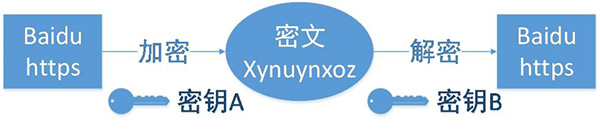

HTTP与HTTPS的区别
超文本传输协议HTTP协议被用于在Web浏览器和网站服务器之间传递信息，HTTP协议以明文方式发送内容，不提供任何方式的数据加密，如果攻击者截取了Web浏览器和网站服务器之间的传输报文，就可以直接读懂其中的信息，因此，HTTP协议不适合传输一些敏感信息，比如：信用卡号、密码等支付信息。
为了解决HTTP协议的这一缺陷，需要使用另一种协议：安全套接字层超文本传输协议HTTPS，为了数据传输的安全，HTTPS在HTTP的基础上加入了SSL协议，SSL依靠证书来验证服务器的身份，并为浏览器和服务器之间的通信加密。
一、HTTP和HTTPS的基本概念
HTTP：是互联网上应用最为广泛的一种网络协议，是一个客户端和服务器端请求和应答的标准（TCP），用于从WWW服务器传输超文本到本地浏览器的传输协议，它可以使浏览器更加高效，使网络传输减少。
HTTPS：是以安全为目标的HTTP通道，简单讲是HTTP的安全版，即HTTP下加入SSL层，HTTPS的安全基础是SSL，因此加密的详细内容就需要SSL。
HTTPS协议的主要作用可以分为两种：一种是建立一个信息安全通道，来保证数据传输的安全；另一种就是确认网站的真实性。
二、HTTP与HTTPS有什么区别？
HTTP协议传输的数据都是未加密的，也就是明文的，因此使用HTTP协议传输隐私信息非常不安全，为了保证这些隐私数据能加密传输，于是网景公司设计了SSL（Secure Sockets Layer）协议用于对HTTP协议传输的数据进行加密，从而就诞生了HTTPS。简单来说，HTTPS协议是由SSL+HTTP协议构建的可进行加密传输、身份认证的网络协议，要比http协议安全。
HTTPS和HTTP的区别主要如下：
[1.ca证书，申请证书需要费用
2.http是明文传输 https是加密后传输
3.端口 http 80 https 443
4.http是无状态的 https ssl + http 加密协议传输 更安全
4.http是无状态的 https ssl + http 加密协议传输 更安全
]
1、https协议需要到ca申请证书，一般免费证书较少，因而需要一定费用。 证书上
2、http是超文本传输协议，信息是明文传输，https则是具有安全性的 ssl加密传输协议。 协议
3、http和https使用的是完全不同的连接方式，用的端口也不一样，前者是80，后者是443。 端口
4、http的连接很简单，是无状态的；HTTPS协议是由SSL+HTTP协议构建的可进行加密传输、身份认证的网络协议，比http协议安全。 身份验证
三、HTTPS的工作原理
我们都知道HTTPS能够加密信息，以免敏感信息被第三方获取，所以很多银行网站或电子邮箱等等安全级别较高的服务都会采用HTTPS协议。

客户端在使用HTTPS方式与Web服务器通信时有以下几个步骤，如图所示。
（1）客户使用https的URL访问Web服务器，要求与Web服务器建立SSL连接。
（2）Web服务器收到客户端请求后，会将网站的证书信息（证书中包含公钥）传送一份给客户端。
（3）客户端的浏览器与Web服务器开始协商SSL连接的安全等级，也就是信息加密的等级。
（4）客户端的浏览器根据双方同意的安全等级，建立会话密钥，然后利用网站的公钥将会话密钥加密，并传送给网站。
（5）Web服务器利用自己的私钥解密出会话密钥。
（6）Web服务器利用会话密钥加密与客户端之间的通信。
1.客户端浏览器向服务端浏览器发送https链接请求公钥
2.客户端生成随机密钥
3.客户端利用公钥对密钥进行加密
4.客户端发送加密后的密钥给服务器
双方通过加密后的密钥进行交流（前台填写表格）

四、HTTPS的优点(减少人为攻击，提高网站排名搜索)
尽管HTTPS并非绝对安全，掌握根证书的机构、掌握加密算法的组织同样可以进行中间人形式的攻击，但HTTPS仍是现行架构下最安全的解决方案，主要有以下几个好处：
（1）使用HTTPS协议可认证用户和服务器，确保数据发送到正确的客户机和服务器；
（2）HTTPS协议是由SSL+HTTP协议构建的可进行加密传输、身份认证的网络协议，要比http协议安全，可防止数据在传输过程中不被窃取、改变，确保数据的完整性。
（3）HTTPS是现行架构下最安全的解决方案，虽然不是绝对安全，但它大幅增加了中间人攻击的成本。
（4）谷歌曾在2014年8月份调整搜索引擎算法，并称“比起同等HTTP网站，采用HTTPS加密的网站在搜索结果中的排名将会更高”。
五、HTTPS的缺点
虽然说HTTPS有很大的优势，但其相对来说，还是存在不足之处的：
（1）HTTPS协议握手阶段比较费时，会使页面的加载时间延长近50%，增加10%到20%的耗电；
（2）HTTPS连接缓存不如HTTP高效，会增加数据开销和功耗，甚至已有的安全措施也会因此而受到影响；
（3）SSL证书需要钱，功能越强大的证书费用越高，个人网站、小网站没有必要一般不会用。
（4）SSL证书通常需要绑定IP，不能在同一IP上绑定多个域名，IPv4资源不可能支撑这个消耗。
（5）HTTPS协议的加密范围也比较有限，在黑客攻击、拒绝服务攻击、服务器劫持等方面几乎起不到什么作用。最关键的，SSL证书的信用链体系并不安全，特别是在某些国家可以控制CA根证书的情况下，中间人攻击一样可行。
六、http切换到HTTPS
如果需要将网站从http切换到https到底该如何实现呢？
这里需要将页面中所有的链接，例如js，css，图片等等链接都由http改为https。例如：http://www.baidu.com改为https://www.baidu.com
BTW，这里虽然将http切换为了https，还是建议保留http。所以我们在切换的时候可以做http和https的兼容，具体实现方式是，去掉页面链接中的http头部，这样可以自动匹配http头和https头。例如：将http://www.baidu.com改为//www.baidu.com。然后当用户从http的入口进入访问页面时，页面就是http，如果用户是从https的入口进入访问页面，页面即使https的。
Measure
Measure